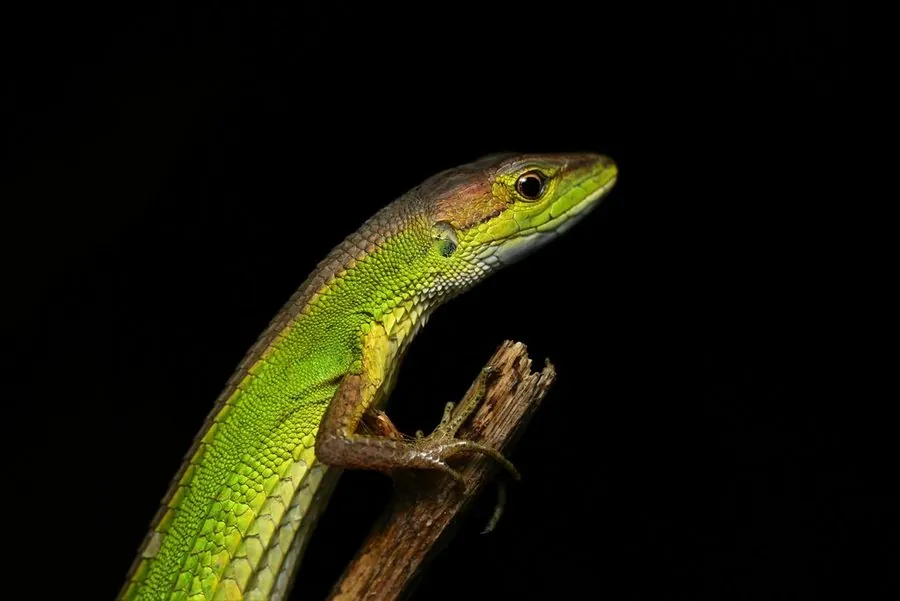

爬行动物 · 动物界
北草蜥 Takydromus septentrionalis

中国东部常见的日行性蜥蜴，身体细长、尾巴极长，善于在草丛中穿梭捕虫，遇险时能断尾逃生，是南方常见的蜥蜴。
- 分类
- 门脊索动物门纲爬行纲目有鳞目科蜥蜴科属草蜥属
- 栖息环境
- 草地、灌丛、农田、林缘与石堆
- 地理分布
- 中国东部、中部和南部的大部分地区
- 保护级别
- IUCN 暂无评估；中国未列入国家重点保护名录
物种志
北草蜥体长 20–30 厘米，其中尾巴常超过身体长度，身体细长，头部呈楔形，吻端尖，四肢细长，趾端有锐爪；背部呈绿褐、灰褐或橄榄褐色，体侧有深色纵纹或浅色条纹，腹部淡黄。它的长尾在草丛中十分灵活。
它分布于中国东部、中部和南部，栖息于草地、灌丛、农田、林缘和石堆，白天活动，捕食小型昆虫和蜘蛛。它是卵生蜥蜴，雌蜥在土壤或落叶层中产卵 2–8 枚，孵化期约 40–50 天。北草蜥无毒，对人无害，是草丛中常见的益蜥；遇到危险时它会主动断尾，脱落的尾巴还能扭动吸引天敌注意，之后尾巴可再生。它目前未被列入国家重点保护名录，是观察蜥蜴生态的常见对象。
形态与习性
- 食性小型昆虫和蜘蛛
- 体长20–30 cm（含尾）
- 寿命约 3–5 年
- 繁殖卵生，2–8 枚，孵化 40–50 天
- 防御遇险时断尾逃生，尾巴可再生
趣味知识
- 北草蜥的尾巴通常比身体还长，在草丛中摆动十分灵活。
- 遇险时它会主动断尾，脱落的尾巴还能扭动吸引天敌注意。
- 北草蜥无毒，是草丛和农田里捕食小型昆虫的益蜥。